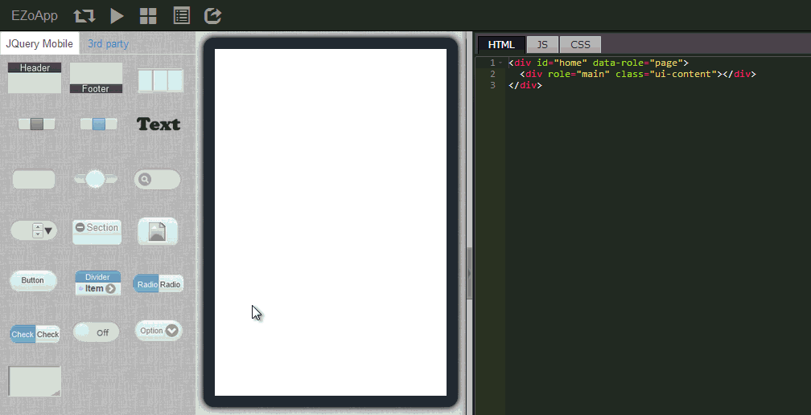

基本组件实作 - 建立下拉选单
下拉式选单不仅在网页中很常见，在 App 里头也是经常就会看到它的身影，而一个与后端数据库有串接的程序，也一定常常使用到下拉选单来表现诸多的功能和选项。
在 EZoApp 里头，下拉选单是以 jQuery Mobile 的组件作为基础建构，让大家可以单纯使用拖拉的方式，不需要撰写额外的程序，就能够设计出下拉式选单，也方便前端和后端的人员互相配合，更可以省下撰写下拉选单程式的时间，将精力花在更值得关注的细节和功能上。
当然，EZoApp 所使用的下拉选单，都是由 HTML 所撰写出来的，因此如果大家对于 HTML 有一定程度的基础，就能够针对下拉选单做更多的修改和变化，呈现出来的画面也会更加精采可期！对于 HTML 不熟悉的朋友们，也可以藉由 EZoApp 的双向互动，了解下拉式选单在 HTML 中呈现的方式，也不失为一个学习的好方法喔！
范例链接：
基本组件实作 - 建立下拉选单

一、放入下拉选单
放入下拉选单的方法很简单，只要从左侧拖曳 selectmenu 的组件进入编辑区域即可。

二、新增下拉选单选项
因为是下拉式选单，我们必须要手动新增选单里头的选项，新增的方法非常的简单，几乎只需要单纯的复制贴上即可，我们只要复制程序代码内的 option 标签，有几个 option 卷标就有几个选项，最后别忘记修改 value 与选项的名称喔！

三、组合 ListView
大家或许会发现，我们在编辑区域可以把下拉选单的组件内容分离，例如把下拉选单拉出虚线框，或是把标题拉出虚线框...等诸如此类，甚至可以把不同的元素经由拖曳的方式组合，但这里却发现没有办法把下拉选单 selectmenu 和 ListView 组合在一起。 其实不用担心，由于所有的程序与组件基本上都是 HTML 的语法组成，所以我们只要进行简单的复制贴上动作，就能够轻松的把不同的组件组合在一起啰！
利用这种方式，我们可以任意的组合组件，不过当然有一个要注意的地方，就是要尽量符合 HTML 的语法规范，避免届时产生不必要的问题和错误。
范例链接：
基本组件实作 - 建立下拉选单